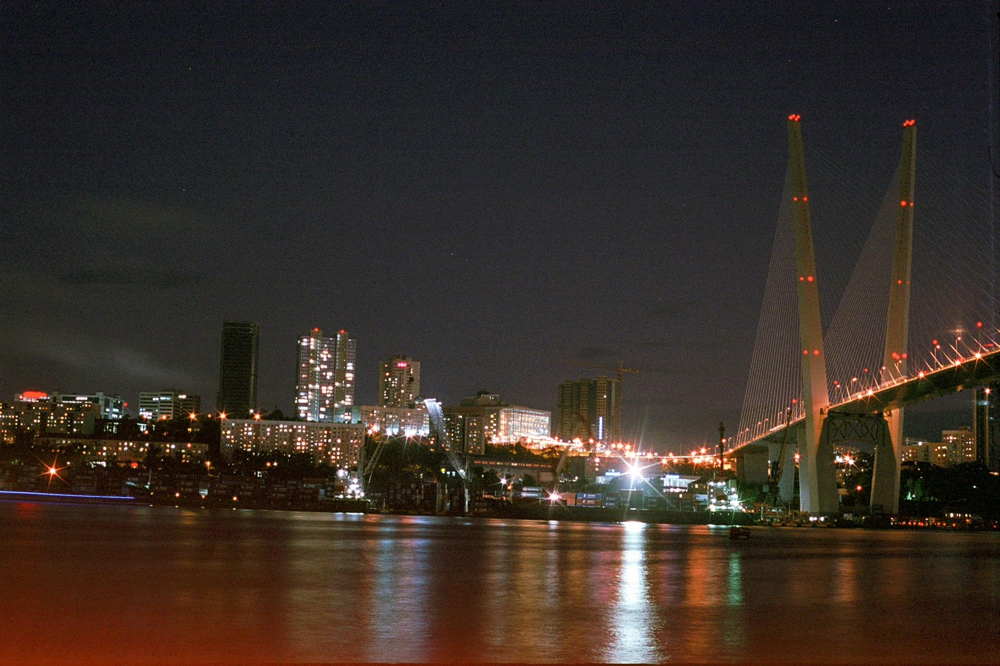

Ранний выход
Яхту заказывайте на первую половину дня, не на закатный круиз. Рикорда и Желтухина лежат дальше Попова, и к спектаклю нужно успеть вернуться.
День 05 из 10
Вторая яхта, уже без городской набережной за кормой. Днём острова Рикорда и Желтухина, вечером Приморская сцена Мариинского театра.
Яхту заказывайте на первую половину дня, не на закатный круиз. Рикорда и Желтухина лежат дальше Попова, и к спектаклю нужно успеть вернуться.
Стоянки у Рикорда и Желтухина: вода, скалы, короткие высадки только в разрешённых местах. Рядом режим морского заповедника, его не нарушают «на пять минут».
Приморская сцена Мариинского театра у Золотого Рога. Билет берите до поездки, не у касс в восемь вечера.
Острова Рикорда и Желтухина замыкают западную часть архипелага императрицы Евгении. Они меньше городских привычек: ни кампуса, ни набережной с фонарями. Смысл дня в расстоянии. В третий день море было часом хода до Попова. Сегодня оно становится открытее, и город на время пропадает.
Рикорд назван в честь адмирала Петра Ивановича Рикорда. Желтухин — меньший сосед. Оба хороши в ясную воду и бесполезны в тумане: если видимость садится, капитан имеет право повернуть раньше. Запишите это в план как нормальное условие, а не как срыв маршрута.
Дальневосточный морской заповедник занимает часть этого залива с 1978 года. Научная задача — сохранить бухты и острова, которые легко стереть якорными стоянками и кострами. Путеводитель поэтому не рисует «дикий пляж, где можно всё». Рисует выход с теми, кто знает границу заповедной акватории.
Вечер возвращает в город резко и правильно. Приморская сцена Мариинского — постоянная труппа на Тихом океане, не гастрольный десант на два вечера. Спектакль после моря работает лучше любой второй экскурсии: тело уже устало, город снова нужен как зал, свет и чужая речь.
Острова, которые вы обошли, лежат перед Хасанским берегом. Шестой день уходит туда по суше.
